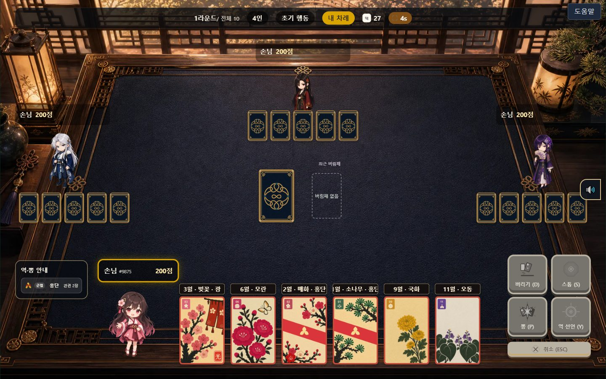

▸ 02 · Prototype · 2026
Hwawol : Nylon Pong
화월 : Nylon Pong — 전통 화투 「나이롱뽕」을 2~4인 실시간 대전 웹게임으로
▸ 02 · Prototype · 2026
화월 : Nylon Pong — 전통 화투 「나이롱뽕」을 2~4인 실시간 대전 웹게임으로

01문제
원작은 점수가 낮을수록 이기는 방식이라 대중 게이머의 직관과 반대였습니다. 그대로 옮기면 처음 하는 사람이 첫 판부터 막힙니다.
02기획 판단
원작의 재미는 살리고 진입 장벽만 낮추려 했습니다. 200점에서 깎여 나가는 차감제로 방향을 뒤집되 '덜 먹기' 전략은 '덜 깎이기'로 살렸습니다. 낮은 카드만 모으면 되는 단조로운 정석에는 화투 역(광·단·고도리 같은 카드 조합)을 더했고, 12,271,512가지 경우(48장 중 6장)에서 딜링 직후 역이 완성될 확률을 계산해 희귀한 역일수록 보너스를 높게 매겼습니다.
200
점에서 깎이는 차감제
13
종의 역
10
최대 라운드
2–4
인 실시간 대전
03튜토리얼
읽는 설명서로는 조작이 손에 남지 않는다고 보고, 실제 게임판 위에서 직접 조작하며 배우는 9단계 유도형 튜토리얼을 설계했습니다. 9단계 구성과 짚을 오해, 곧 고스톱 경험자가 가져올 오해 6가지는 제가 정했습니다. 문서·대본 작성과 구현은 AI가 맡았습니다.
04AI와 검증
팀은 팀원 한 명이 설계한 규약에 따라 회의록 대신 Task 문서로 범위·완료 기준·인계를 남겼습니다. 저는 담당 Task 21건 중 17건에 Claude Code를 작업자로 두었고, 프론트엔드 계열 Task의 완료 승인을 맡았습니다.
튜토리얼 작업 중 AI가 계약에 없는 역 이름 5종을 발견하고 규약대로 작업을 멈춰 보고했습니다. 저는 담당자로서 범위 확장을 승인했고, 그 뒤 AI가 계약·콘텐츠·검증기를 한 번에 정리했습니다.
05결과
팀은 3주 만에 역 13종, 최대 10라운드의 실시간 대전을 웹에 배포했습니다(프로토타입). 플레이 장면은 영상으로 볼 수 있습니다.
AI가 빠르게 만든 결과일수록 실제 동작과 대조하는 사람이 필요합니다.
Documents · 5